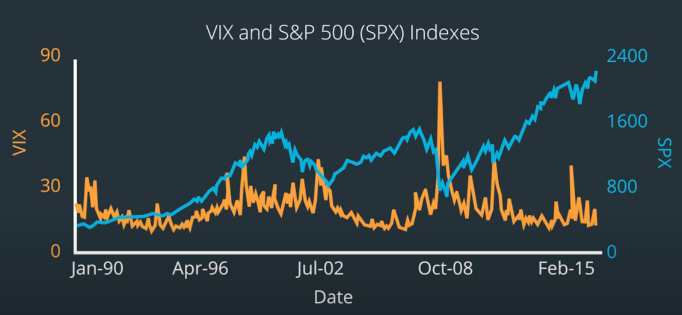

Volatility
Table of Contents
1 Overview
Volatility is simply the standard deviation of the probability distribution of log returns, and can be used for:
- Measuring risk
- Defining position sizes
- Designing alpha factors
- Determining the prices of options contracts
- Trading volatility directly
2 Uses of Volatility
- is often quoted as gauge for fear. e.g. VIX
- volatility tends to be high when the market is going down.
- tends to be low when the market is going up.
- Limit the universe
- some strategy may might work best on high volatility stocks.
- low volatility stocks tends to perform well compared to high volatility stocks. e.g. USMV, SPLV
- Normalize another metric by volatility
- e.g. same profit with different volatility.
- e.g. Normalize the momentum signal by dividing by the volatility.
- Help determine position sizes
- Quants utilize smaller position sizes when market are volatile to minimize the volatility of P&L
An example formula:

3 Formula
\[Volatility\ \sigma=\sqrt{\frac{\sum_{i=1}^{n}(r_i - \bar{r})^2}{n-1}}\]
- if \(\bar{r}=0\) and \(ddof=0\), \(\sigma\) is just the sample mean of r
- \(r_i=ln(p_t / p_{t-1})\)
3.1 Annualized Volatility
\[\sigma_{year}=\sqrt{n}\sigma_{day}\]
- n is the number of trading days in a year, which is 252.
- \(Var(r_{year})=Var(r_1)+Var(r_2)+...+Var(r_n)\) if \(r_1\), \(r_2\) … are independent.
- e.g. variance \(\sigma_{year}^2=12\sigma_{month}^{2}\)
- e.g. volatility \(\sigma_{year} = \sqrt{12}\sigma_{month}\)
3.2 Exponentially Weighted Moving Average
Simplify the volatility formula
- simple average \(\sigma_t^2=\frac{1}{n}\sum_{i=1}^{n}(r_{t-i})^2\) (let \(\bar{r}=0\))
- weighted average \(\sigma_t^2=\sum_{i=1}^n\alpha_{i}r_{t-i}^2\) (\(\sum_{i=1}^{n}\alpha_i=1\))
- exponential: \(\alpha_{i+1}=\lambda\alpha_i\)
\[\sigma_t^2=\frac{\lambda^{0}r_{t-1}^2+\lambda^{1}r_{t-2}^2 + ... + \lambda^{n-1}r_{t-n}^2}{1+\lambda+...+\lambda^{n-1}}\]
import pandas as pd import numpy as np def ewm_volatility(prices, l): log_rets = np.log(prices/prices.shift(1)) ewm_volatility = np.sqrt((log_rets**2).ewm(alpha=1-l).mean()) return ewm_volatility
4 Modeling Volatility
4.1 ARCH
Autoregressive Conditionally Heteroscedastic
- Autoregressive: the current value is somehow related to the recent past values.
- Heteroscedastic: the variable may have different magnitudes of variability at different time points.
- The magnitude of variability is commonly measured using variance.
- Conditional: refers to a constraint we place in the model.
- The constraint limits the heteroscedastic property to be conditionally dependent on the previous values.
- ARCH(1) model
\[\text{Estimated Current Variance } Var(r_t|r_{t-1})=\alpha_0 + \alpha_1 r_{t-1}^2\]
- \(\alpha_0, \alpha_1\) are parameters.
- ARCH(m) model \[\text{Estimated Current Variance } Var(r_t|r_{t-1},r_{t-2},...,r_{t-m})=\alpha_0 + \alpha_1 r_{t-1}^2 + ... + \alpha_m r_{t-m}^2\]
GARCH(m, n)
Generalized ARCH model: to make the current variance dependent on previous estimates of the variance. \[\begin{align*} \sigma_t^2 & = Var(y_t|y_{t-1},...,y_{t-m},\sigma_{t-1}^2,...,\sigma_{t-n}^2) \\ & = \alpha_0 + \alpha_1 y_{t-1}^2 + ... + \alpha_m y_{t-m}^2 + \beta_1\sigma_{t-1}^2 + ... + \beta_n\sigma_{t-n}^2 \end{align*}\]
5 VIX Index
VIX index represents the annualized volatility of the S&P 500 Index 
- VVIX is a volatility index of the VIX Index